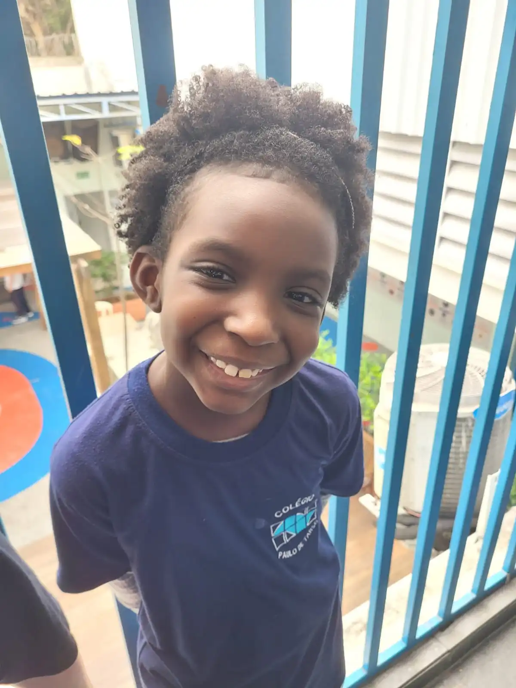
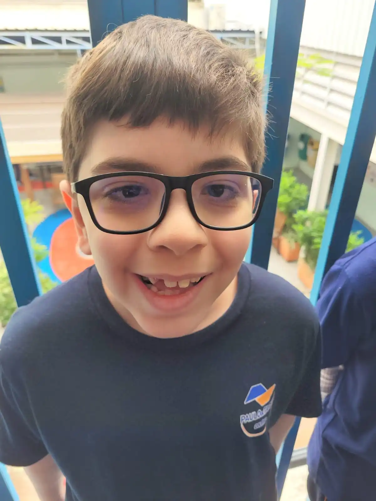
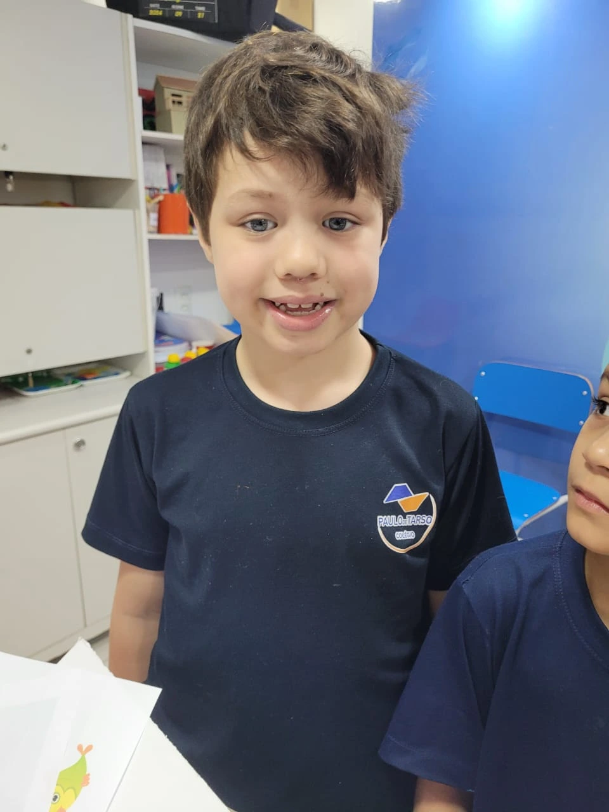
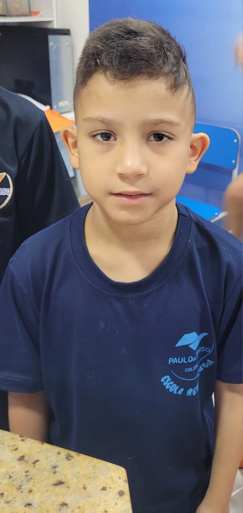

Equipe TECHNOBOTS - First Lego League🤖
Quem Somos
Somos uma equipe apaixonada por tecnologia, inovação e lego, participando de desafios como o da FIRST LEGO League com muita alegria, ansiedade e sorte!
O Projeto
Nosso projeto busca resolver o problema da poluição nas marés, fazendo com que retiremos os lixos jogados no mar.

Materiais Utilizados
- LEGO Technic
- Sensor de movimento
- Peças lego
- Peças robóticas
Depoimentos
"Foi incrível trabalhar em equipe, foi meio trabalhoso mas com dedicação e vontade conseguimos concluir nosso projeto!" - Rafael
"Aprendi muito sobre programação, cooperação e vontade." - Alice




Extras
Não ganhamos o troféu de melhor robô, mas ganhamos bastante aprendizado.